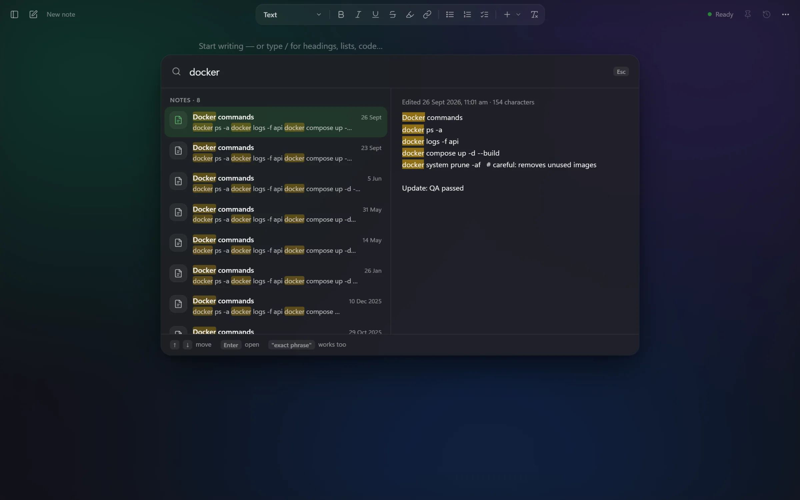
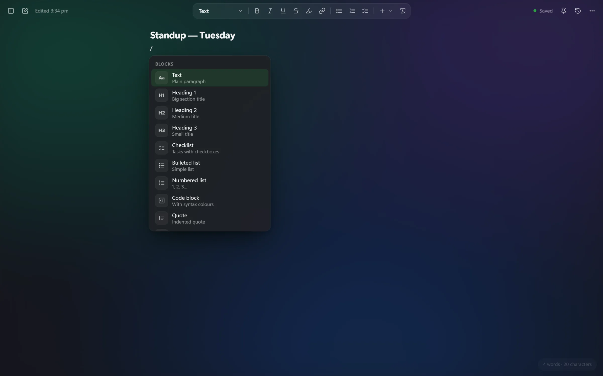
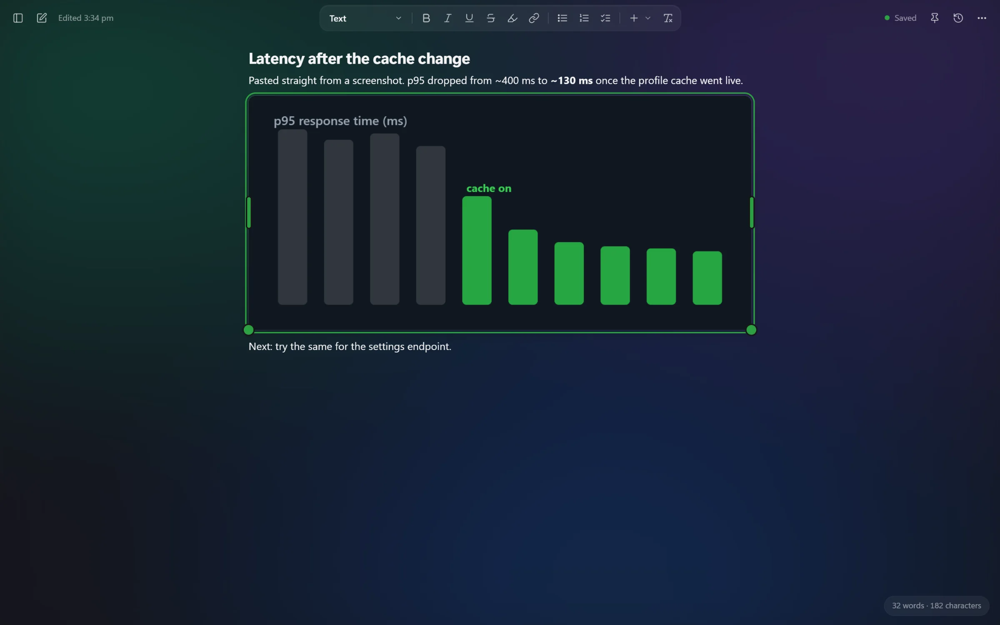

Ctrl+K finds anything you ever wrote
Search every note at once, with a live preview. Type serById and it finds getUserById. Press Enter and the note opens right at the match.

For Windows developers who live in Notepad
NoteVault opens like Notepad: press Win, type note, start writing. Everything saves as you type, Ctrl+K finds anything you ever wrote, and a GitHub-style grid shows every day you wrote something.
Sound familiar?
None are saved, because saving means naming. Somewhere in there is the SQL query from last Tuesday. You open them one by one until you find it.
Win, type note, Enter. A clean page with the cursor ready, every time.
No save dialog and no file names. The first line becomes the title. Close the window any time.
Type part of a word, even inside code, and every note that has it shows up with the match highlighted.
What's inside
Built for the way developers actually use a scratchpad: code backups, quick tasks, half-written thoughts.
Search every note at once, with a live preview. Type serById and it finds getUserById. Press Enter and the note opens right at the match.

Every keystroke is stored within half a second. Even if the window closes mid-sentence, the text comes back.
Every square is a day you wrote or edited something. Click a day in the app to see exactly those notes.
Bold, headings, checklists and tables, without seeing a single asterisk. Use the toolbar, select text, or type / for the block menu.

Win+Shift+S, then Ctrl+V. Pictures drop straight into the note. Drag the handles to resize, double-click to see full size.

Paste from VS Code and it lands in a code block with your indentation and syntax colours. Perfect for "backup before I change this".
// Backup before refactor — useAutosave export function useAutosave(value, save, delay = 400) { const timer = useRef(); useEffect(() => { clearTimeout(timer.current); timer.current = setTimeout(() => save(value), delay); }, [value]); }
Details you only miss when they're gone.
Shortcuts
A fresh page, cursor ready. Same muscle memory as Notepad.
A fresh page while NoteVault is open. The old one is already saved.
Notes and commands in one box, with a live preview.
Your notes grouped by day, plus the activity grid.
Headings, checklists, code, tables and today's date.
Install
NoteVault-1.0.1-windows.zip (268 KB). Extract it anywhere, for example Downloads.
Install NoteVault.cmdNo admin rights needed. If Node.js is missing, the installer offers to install it for you, then opens NoteVault.
From now on: Win, type notev, Enter. You can delete the zip.
Privacy
No account, no cloud, no tracking. NoteVault runs a tiny server on your own computer that only your computer can reach.
Questions
Yes. There's no paid plan, no account and no ads.
Yes. Open Settings → Data → Import. NoteVault reads Windows Notepad's unsaved tabs and copies them in, skipping any it already has.
NoteVault's engine is a small Node.js program that stores your notes and serves the app to Edge on your own PC. It's the same Node.js developers already use; the installer checks the version and can install it with winget.
Everything lives in %LOCALAPPDATA%\NoteVault: notes.db for your notes, images for pasted pictures, and backups for the daily copies. Copy that folder to back it all up.
Not yet. NoteVault is built around Windows: the Start menu, Notepad import and the Windows 11 glass look.
Search the Start menu for Uninstall NoteVault. The app and its shortcuts are removed and your notes are kept, in case you change your mind.
NoteVault 1.0 for Windows
Keep the habit of opening a fresh page. Lose the mess of unsaved, unnamed tabs.